전자계산기기능사 (2010-03-28 기출문제)
1과목: 전기전자공학
1. 정류기의 평활회로는 어느것에 속하는가?
- 고역 통과 여파기
- 저역 통과 여파기
- 대역 통과 여파기
- 대역 소거 여파기
(정답률: 72%)

2. DSB변조에서 반송파의 주파수가 700KHz이고 변조파의 주파수가 5KHz일때 주파수 대역폭은?
- 5KHz
- 10KHz
- 7⑤KHz
- 710KHz
(정답률: 45%)
3. 연산증폭기의 입력 오프셋 전압에 대한 설명으로 가장 적합한 것은?
- 출력전압과 입력전압이 같게 될때의 증폭기 입력전압
- 차동 출력전압이 0V일때 두 입력단자에 흐르는 전류의 차
- 차동 출력전압이 무한대가 되도록 하기 위하여 입력단자 사이에 걸어주는 전압
- 차동 출력전압이 0V가 되도록 하기 위하여 입력 단자 사이에 걸어주는 전압.
(정답률: 63%)
4. 어떤 증폭기에서 입력전압이 1mV일때 출력전압이 1V 이었다면 이 증폭기의 전압이득은?
- 20dB
- 40dB
- 60dB
- 80dB
(정답률: 43%)
5. 다음중 P형 반도체를 만드는 불순물 원소는?
- 붕소(B)
- 인(P)
- 비소(As)
- 안티몬(Sb)
(정답률: 61%)
6. 다음중 반도체의 재료로 가장 많이 사용되는 것은?
- He
- Fe
- Cr
- Si
(정답률: 80%)
7. 우궤환 시 전압이득이 90인 증폭기에서 궤환율 μ=0. 1의 부궤환을 걸었을때 증폭기의 전압이득은?
- 5
- 9
- 45
- 81
(정답률: 54%)
8. 자체 인덕턴스가 10H인 코일에 1A의 전류가 흐를때 저장되는 에너지는?
- 1J
- 5J
- 10J
- 20
(정답률: 44%)
9. 용량이 같은 콘덴서 n개를 병렬 접속하면 콘덴서 용량은 한개일 경우의 몇배가 되는가?
- n
- 1/n
- n-1
- 1/(n-1)
(정답률: 47%)
10. 고주파 전력증폭기에 주로 사용되는 증폭방식은?
- A급
- B급
- C급
- AB급
(정답률: 51%)
2과목: 전자계산기구조
11. 게이트 당 소비전력이 가장 낮은것은?
- DTL
- TTL
- MOS
- CMOS
(정답률: 83%)
12. 개인용 컴퓨터에서 자료의 외부적 표현으로 가장 많이 사용하는 ASCII코드는 7비트이다. 표현할 수 있는 최대 정보수는?
- 7
- 49
- 128
- 1024
(정답률: 86%)
13. 중앙처리장치로부터 입출력 지시를 받으면 직접 주기억장치에 접근하여 데이터를 꺼내 출력하거나 입력한 데이터를 기억시킬 수 있고 입출력에 관한 모든 동작을 자율적으로 수행하는 입출력 제어 방식은?
- 프로그램 제어방식
- 인터럽트 방식
- DMA 방식
- 채널 방식
(정답률: 71%)
14. 주기억장치의 크기가 3K Byte일때 실제 바이트 수는?
- 300 바이트
- 3000 바이트
- 3072 바이트
- 3333 바이트
(정답률: 81%)
15. 특별한 조건이나 신호가 컴퓨터에 인터럽트 되는 것을 방지하는 것은?
- 인터럽트 마스크
- 인터럽트 레펠
- 인터럽트 카운터
- 인터럽트 핸들러
(정답률: 65%)
16. ADD동작이 산술연산이라면 OR 동작은?
- 제어명령
- 논리연산 명령
- 데이터 전송명령
- 분기 명령
(정답률: 79%)
17. 해밍코드의 대표적 특징은?
- 데이터 전송시 신호가 없을때를 구별하기 쉽다.
- 자기보수(self complement)적인 성질이 있다.
- 기계적인동작을 제어하는데 사용하기 알맞은 코드이다
- 페리티규칙으로 잘못된 비트를 찾아서 수정할수 있다
(정답률: 78%)
18. 이항연산에 해당하는것은?
- MOVE
- EX-OR
- SHIFT
- COMPLEMENT
(정답률: 66%)
19. 순차 접근 저장 매체에 해당하는것은?
- 자기 테이프
- 자기 드럼
- 자기 디스크
- 자기 코어
(정답률: 85%)
20. 프로그램 실행중에 강제적으로 제어를 특정주소로 옮기는 것으로 프로그램의 실행을 중단하고 그 시점에서의 주요 데이터를 주기억장치로 되돌려 놓은 다음 특정 주소로 부터 시작되는 프로그램에 제어를 옮기는것은?
- 명령 실행
- 인터럽트
- 명령 인출
- 간접 단계
(정답률: 79%)
21. 내부 인터럽트에 해당하는 것은?
- 전원 이상 인터럽트
- 기계 착오 인터럽트
- 입출력 인터럽트
- 프로그램 검사 인터럽트
(정답률: 55%)
22. 다음중 입력장치가 아닌것은?
- 마우스
- 터치 스크린
- 디지타이저
- 플로터
(정답률: 85%)
23. 양방향 전송은 가능하나 동시 전송은 불가능한 방식은?
- Simplex
- Half duplex
- Full duplex
- Dual duplex
(정답률: 79%)
24. 레지스터에 저장된 데이터를 가지고 하나의 클록 펄스 동안에 실행되는 기본적인 동작을 마이크로 동작이라고 한다. 다음중 마이크로 동작이 아닌것은?
- 시프트(SHIFT)
- 카운트(COUNT)
- 클리어(CLEAR)
- 인터럽트(INTERRUPT)
(정답률: 55%)
25. PCM 전송방식의 기본 과정으로 필요하지 않은것은?
- 아날로그화
- 표본화
- 양자화
- 부호화
(정답률: 75%)
26. 프로그램 수행중 서브루틴으로 돌입할 때 프로그램의 리턴번지수를 LIFO(Last-In First-Out)기술로 메모리의 일부에 저장한다. 이 메모리와 가장 밀접한 자료구조는?
- 큐
- 트리
- 스택
- 그래프
(정답률: 72%)
27. 2진수 1111을 그레이코드로 변환하면?
- 0000
- 1000
- 1010
- 1111
(정답률: 74%)
28. 다음에 수행될 명령어의 주소를 나타내는 것은?
- Accumulator
- Instruction
- Stack pointer
- Program counter
(정답률: 70%)
29. 최대 클록 주파수가 가장 높은 논리소자는?
- TTL
- ECL
- MOS
- CMOS
(정답률: 72%)
30. EX-OR 논리회로에 대한 설명으로 옳지 않은것은?
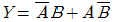
- 입력 A,B가 모두 1일때 출력은 1
- 입력 A,B가 서로 다를때 출력은 1
- 반가산기 설계시 사용
(정답률: 66%)
3과목: 프로그래밍일반
31. 구조적 프로그램의 기본 구조가 아닌것은?
- 순차 구조
- 그물 구조
- 선택 구조
- 반복 구조
(정답률: 73%)
32. 시스템 프로그래밍 언어로 가장 적합한 것은?
- C
- ALGOL
- PL/1
- COBOL
(정답률: 88%)
33. 저급 언어로부터 고급언어순서로 옳게 나열된 것은?
- C 언어 - 기계어 - 어셈블리어
- 어셈블리어 - 기계어 - C 언어
- 기계어 - 어셈블리어 - C 언어
- 어셈블리어 - C 언어 - 기계어
(정답률: 76%)
34. 언어 번역 프로그램에 해당하지 않는 것은?
- 어셈블러
- 로더
- 컴파일러
- 인터프리터
(정답률: 79%)
35. 프로그래밍 작업의 절차로 옳은것은?
- 요구분석-입출력설계-순서도작성-프로그램의 구현과 검사-프로그램의 문서화
- 입출력설계-요구분석-순서도작성-프로그램의 문서화-프로그램의 구현과 검사
- 순서도작성-입출력설계-요구분석-프로그램의 구현과 검사-프로그램의 문서화
- 프로그램의 구현과 검사-프로그램의 문서화-요구분석-입출력설계-순서도작성
(정답률: 63%)
36. BNF기호중 정의를 의미하는것은?
- < >
- |
- ::=
- $
(정답률: 82%)
37. 순서도에 대한 설명과 가장 거리가 먼것은?
- 프로그램 개발비용을 산출하는 역할을 한다
- 프로그램 인수인계시 문서역할을 할수 있다.
- 프로그램 오류수정을 용이하게 한다.
- 프로그램에 대한 이해를 도와준다.
(정답률: 72%)
38. 운영체제 평가기준과 가장 거리가 먼것은?
- 처리능력
- 응답시간
- 비용
- 신뢰도
(정답률: 89%)
39. 교착상태의 해결기법중 점유 및 대기 부정,비선점 부정,환형대기 부정 등과 관계되는것은?
- 예방(Prevention)
- 회피(Avoidance)
- 발견(Detection)
- 회복(Recovery)
(정답률: 57%)
40. 프로그램 문서화의 목적으로 옳지 않은것은?
- 프로그램의 개발 방법과 순서의 비표준화로 효율적 작업환경을 구성한다.
- 프로그램의 유지보수가 용이하다.
- 프로그램의 인수인계가 용이하다.
- 프로그램의 변경,추가에 따른 혼란을 방지할 수 있다.
(정답률: 54%)
4과목: 디지털공학
41. J-K 플립플롭에서 입력 J=K=1 인 상태의 출력은?
- 세트
- 리셋
- 반전
- 불변
(정답률: 83%)
42. 비동기식 카운터에 대한 설명으로 틀린것은?
- 직렬카운터 또는 리플카운터라고도 한다.
- 비트수가 많은 카운터에 적합하다.
- 전단의 출력이 다음단의 트리거 입력이 된다.
- 지연시간으로 고속 카운팅에 부적합하다.
(정답률: 52%)
43. 다음 불대수식중 드모르간의 정리를 옳게 나타낸것은?
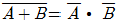
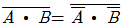
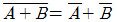
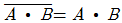
(정답률: 76%)
44. 3-초과 코드에서 사용하지 않는 것은?
- 1100
- 0101
- 0010
- 0011
(정답률: 72%)
45. 2진수 코드를 10진수로 변환 하는것은?
- 디코더
- 인코더
- A/D 변환기
- 카운터
(정답률: 67%)
46. 시프트 레지스터를 만들고자 할 경우 가장 적합한 플립플롭은?
- RST 플립플롭
- D 플립플롭
- RS 플립플롭
- T 플립플롭
(정답률: 56%)
47. 6진 카운터를 만들기 위한 최소 플립플롭의 수는?
- 2개
- 3개
- 4개
- 5개
(정답률: 74%)
48. 전가산기의 입력의 개수와 출력의 개수는?
- 입력 2개,출력 3개
- 입력 2개,출력 4개
- 입력 3개,출력 3개
- 입력 3개,출력 2개
(정답률: 65%)
49. 동기식 9진 카운터를 만드는데 필요한 플립플롭의 개수는?
- 1개
- 2개
- 3개
- 4개
(정답률: 66%)
50. 10진수 463을 16진수로 옳게 나타낸것은?
- 1FC
- 1DA
- 1CF
- 1AD
(정답률: 64%)
51. 다음 회로의 출력은?
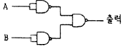
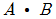
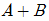
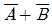
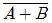
(정답률: 43%)
52. 디지털 신호를 아날로그 신호로 변환하는 장치는?
- A/D 변환기
- D/A 변환기
- 해독기(Decoder)
- 비교회로
(정답률: 87%)
53. 논리식 Y=AB+B를 옳게 간소화 시킨것은?
- A
- B
- AㆍB
- A+B
(정답률: 62%)
54. 플립플롭의 종류가 아닌것은?
- RS-FF
- JK-FF
- CP-FF
- T-FF
(정답률: 88%)
55. 다음 그림과 같이 A와 B에서 값이 입력될 때 출력값은?
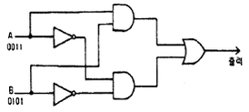
- 1001
- 0101
- 0100
- 0011
(정답률: 52%)
56. 어떤 입력상태에 대해 출력이 무엇이 되든지 상관없는 경우 출력상태를 임의상태라고 하는데 진리표나 카르노도에서는 임의 상태를 일반적으로 어떻게 표시하는가?
- X
- 0
- 1
- Y
(정답률: 64%)
57. 반가산기에서 입력 A=1, B=0이면 출력 함(S)와 올림수(C)는?
- S=0 , C=0
- S=1 , C=0
- S=1 , C=1
- S=0 , C=1
(정답률: 79%)
58. 다음 그림과 같은 회로의 명칭은?
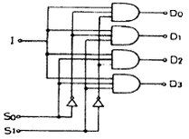
- Decoder
- demultiplexer
- multiplexer
- encoder
(정답률: 45%)
59. 플립플롭중 데이터의 일시적인 보존 또는 디지털 신호의 지연 작용에 많이 사용되는것은?
- D-FF
- JK-FF
- RST-FF
- M/S-FF
(정답률: 72%)
60. 레지스터를 구성하는데 가장 많이 사용되는 회로는?
- Encoder
- Decoder
- Half-Adder
- flip-flop
(정답률: 82%)